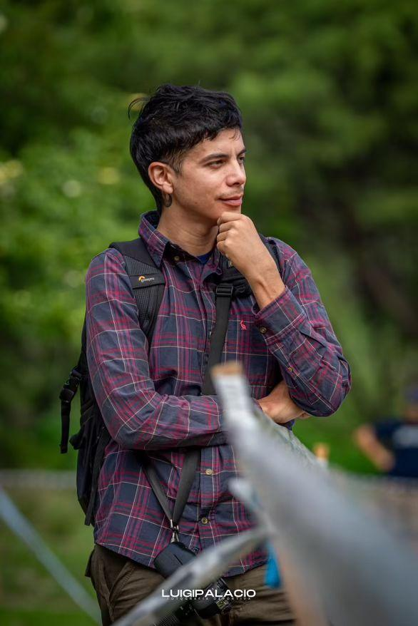

Galería
Una seleccion de los mejores momentos que capturamos en nuestras coberturas. Si sos vos el que aparece, buscá tu dorsal para encontrar tu galeria completa.
Buscar mi dorsal


En RIDEON, no solo capturamos imagenes: inmortalizamos momentos unicos en el deporte, con una mirada artistica que resalta la esencia de cada disciplina. Creemos que cada movimiento tiene una historia, y cada historia merece ser contada con pasion, creatividad y respeto por el esfuerzo del atleta.
Desde el vertigo de una bicicleta en descenso hasta la concentracion de un arquero antes de disparar, nos proponemos mostrar el lado humano, emocional y estetico del deporte, sin importar la disciplina ni el nivel. En cada cobertura, buscamos transmitir la energia, el coraje y la belleza de cada instante.
Documentar el deporte desde una perspectiva artistica y sensible, elevando cada imagen mas alla de lo tecnico, y mostrando el alma del momento con profesionalismo y emocion.
Ser referentes en fotografia deportiva artistica en el pais y la region, ofreciendo una propuesta visual unica, emocional y profesional en cada cobertura.
RIDEON es mas que un equipo: somos un grupo de personas apasionadas por el deporte y la imagen, que se superan cada dia para ofrecer una mirada distinta, poderosa y honesta de lo que realmente significa moverse, competir, sonar y ganar.

Jose Guevara – RIDEON
Una seleccion de los mejores momentos que capturamos en nuestras coberturas. Si sos vos el que aparece, buscá tu dorsal para encontrar tu galeria completa.
Buscar mi dorsal